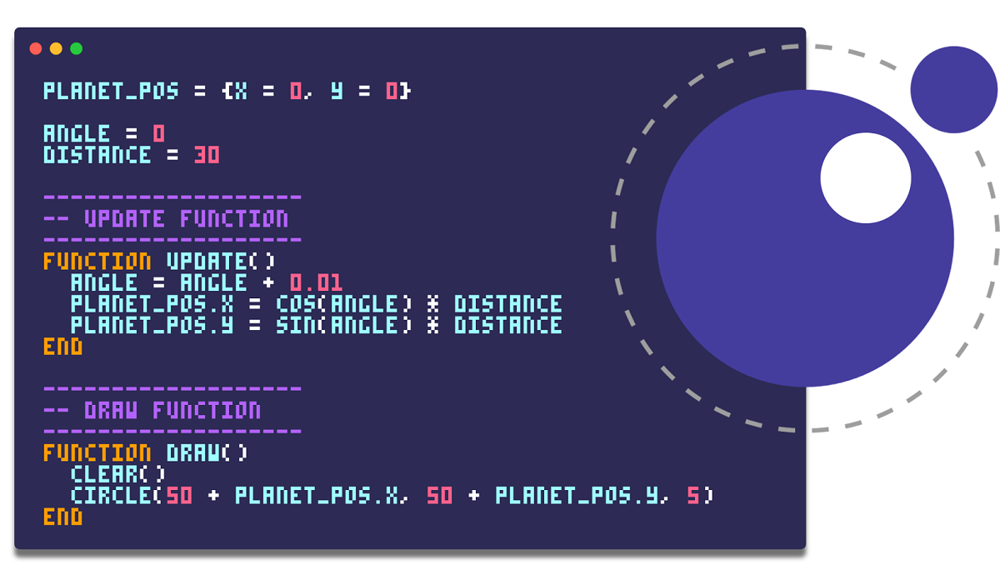

¿Que es lua?
Lua es un lenguaje de programación ligero y de propósito general, diseñado originalmente en 1993 por un equipo de programadores brasileños: Roberto Ierusalimsky, Luiz Henrique de Figueiredo y Waldemar Celes. Fue creado en el Instituto Tecgraf de la Pontificia Universidad Católica de Río de Janeiro, con el objetivo de proporcionar un lenguaje de scripting embebible en aplicaciones más grandes. Lua se caracteriza por su simplicidad, eficiencia y portabilidad, lo que lo ha convertido en una opción popular para su integración en videojuegos, aplicaciones embebidas, y sistemas donde se requiere un lenguaje extensible y fácil de aprender.
